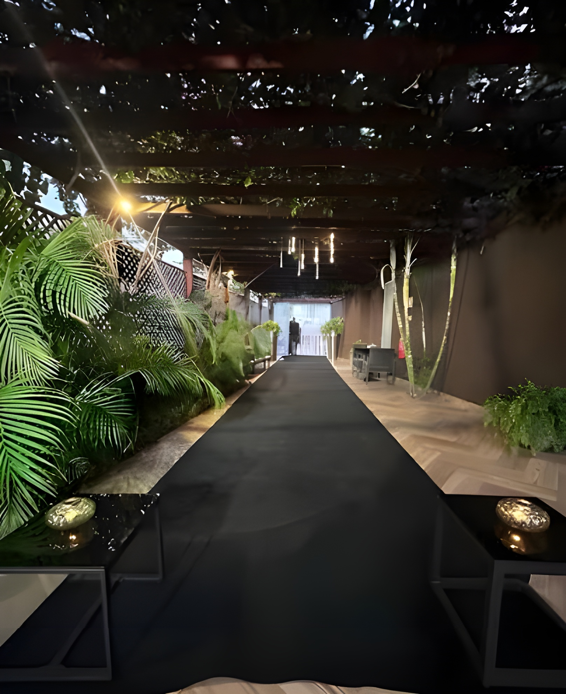
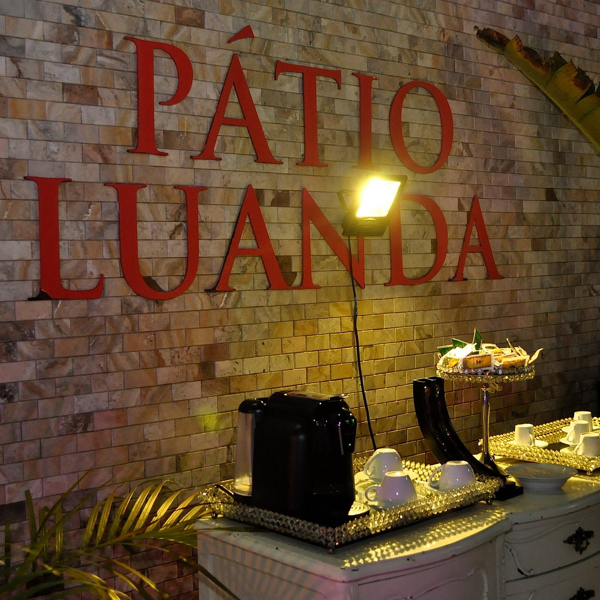

Descobrir o Pátio
Não construímos apenas lugares. Criamos razões para ficar.
Há mais de uma década, o Pátio Luanda recebe à mesa, celebra histórias e cria espaços onde Luanda se encontra.

Pátio Morro BentoTudo começou no Morro Bento
Uma ideia simples, que mudou tudo.
O Pátio nasceu de um desejo: reunir num só lugar aquilo que muitas vezes se procura em sítios diferentes. Boa comida. Um café sem pressa. Espaço para celebrar. Um sítio para reunir a família, receber clientes, descansar ou simplesmente ficar mais um pouco.
Começámos no Morro Bento e crescemos com Luanda. Hoje, o Pátio é muito mais do que um restaurante. É um universo de hospitalidade.
Mais do que espaços, criamos experiências.

O Pátio em números
Uma história que se conta à mesa.
Uma história que cresceu com Luanda
Do primeiro encontro ao que somos hoje.
Morro Bento
Nasce o Pátio Luanda.
Novas experiências
Pastelaria, eventos, catering e guest house.
Mutamba
A expansão no coração da cidade.
Roots
Uma mesa mais íntima, e sushi.
Hoje
Uma marca. Várias experiências. A mesma forma de receber.

A nossa cozinha
Tradição aqui. Mundo lá fora. Tudo no mesmo prato.
O Pátio cresce em Luanda, inspirado pelas pessoas, sabores e histórias que nos rodeiam. Há Angola, há Portugal e há influências de todos os cantos do mundo. Porque respeitar as raízes é também ficar parado. Significa saber de onde partimos para escolher onde queremos chegar.
A nossa cozinha